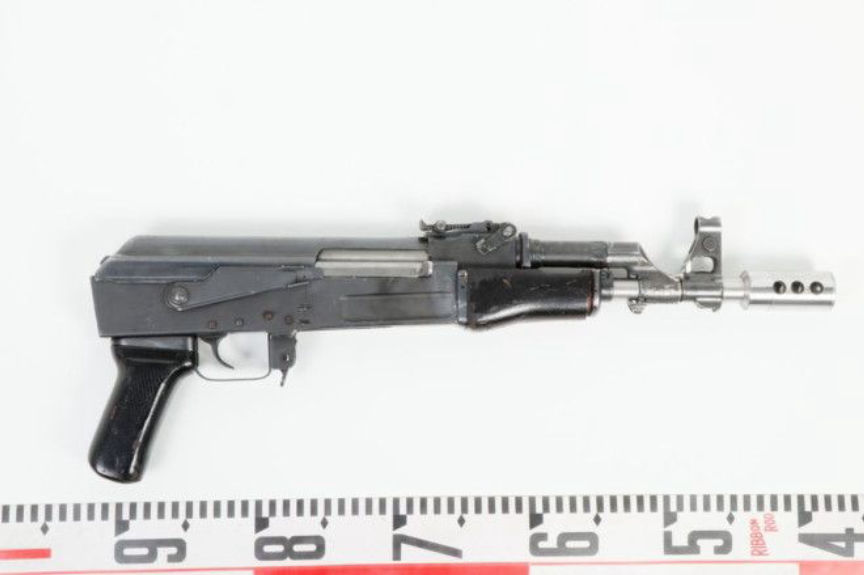
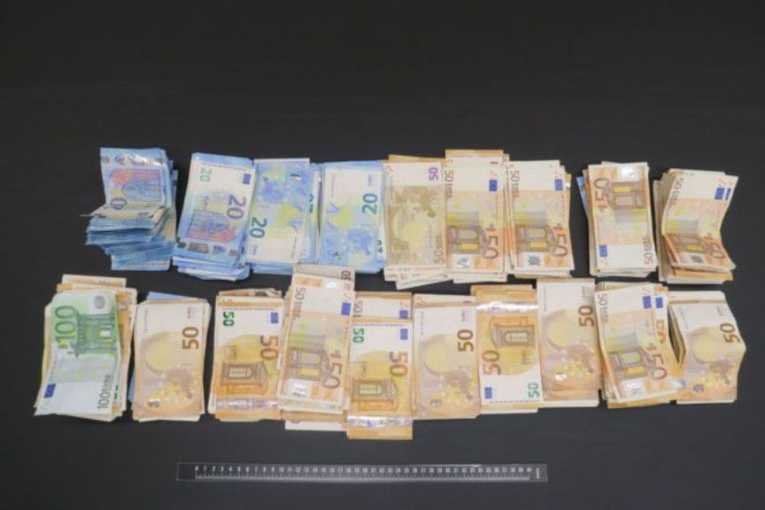
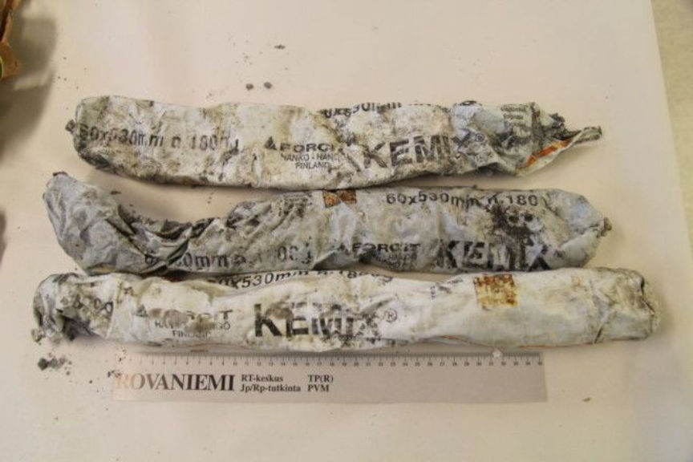
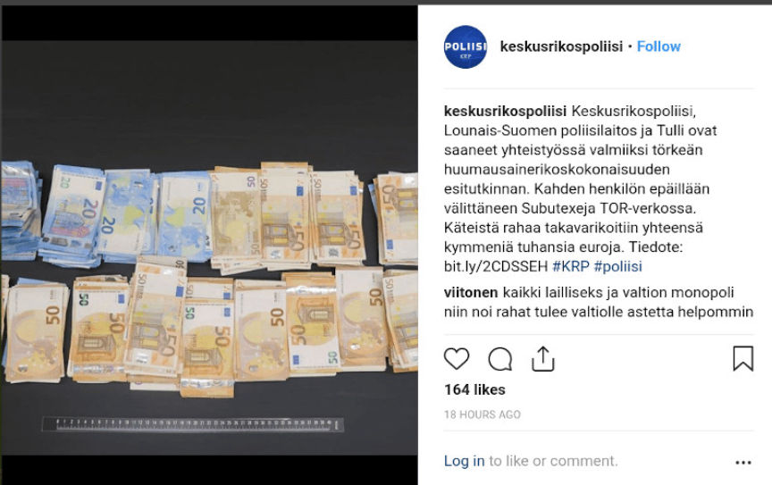
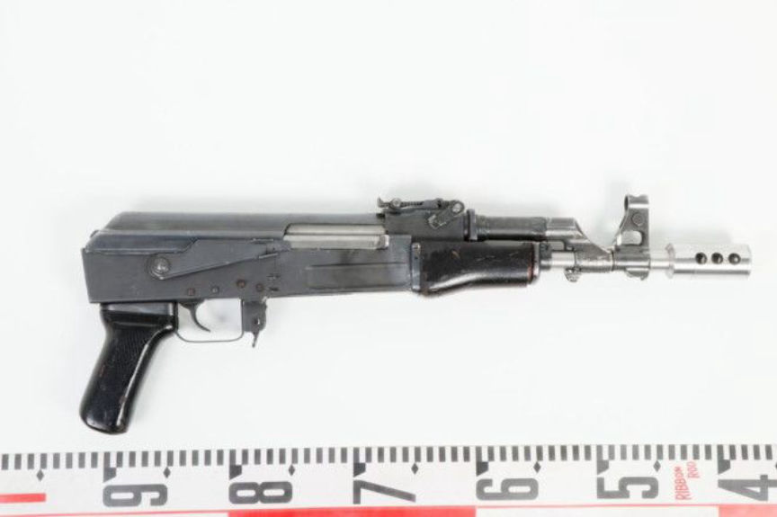
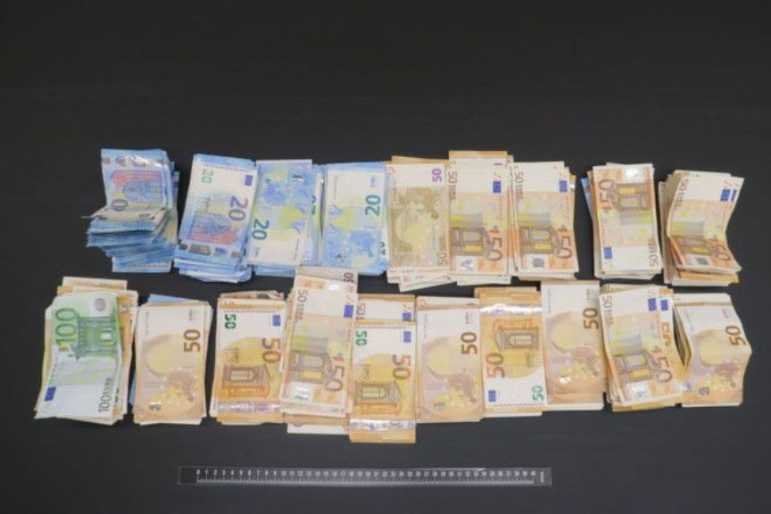
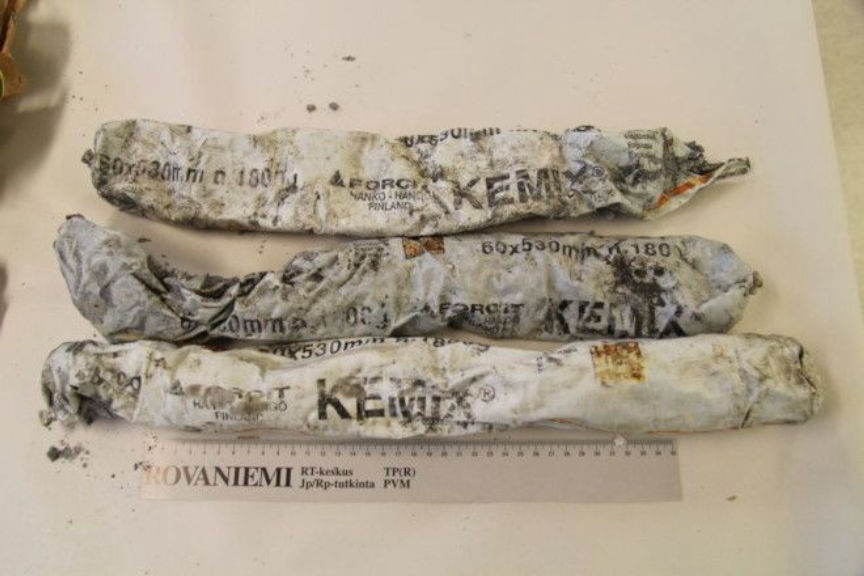
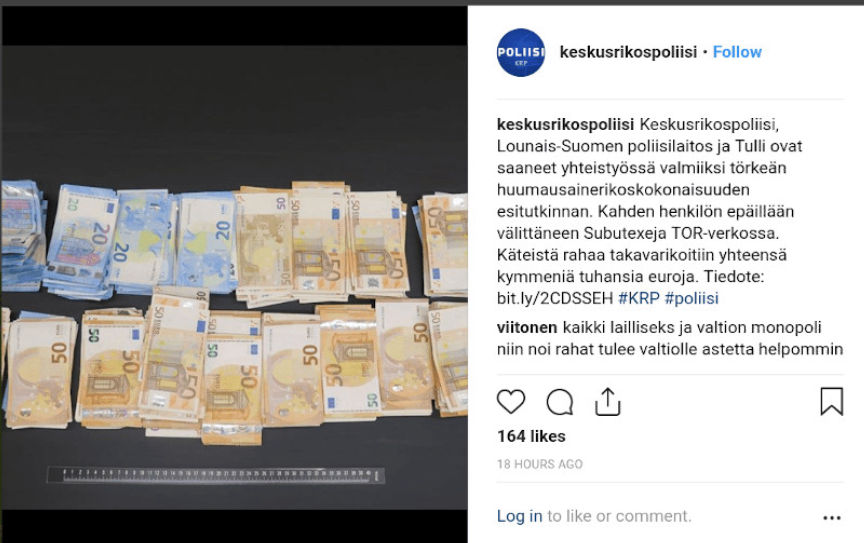

Finnish Police Seize Subutex from Suspected Darkweb Vendors
~2 min read | Published on 2018-10-25, tagged Darkweb-Vendor, Firearms, General-News, Seized using 338 words.
Law enforcement in Finland arrested two alleged Subutex vendors in Pirkanmaa and Northern Finland. According to a publication from Finnish authorities, the men sold thousands of pills on the darkweb between 2017 and 2018.Press Release from the Central Bureau of Investigation
[Translated via Google with minor clarification edits]
The Central Bureau of Investigation, the Southwest Finland Police Department and Customs have completed an investigation into two men suspected of serious drug offenses. Two men living in Pirkanmaa and Northern Finland are suspected of acquiring and distributing a large number of Subutex tablets throughout Finland for further transfer.

According to the preliminary investigation, the main suspects have been distributing drugs from summer 2017 until spring 2018. The men are suspected to have bought Subutex tablets for sale abroad and sold them mainly in Finland through the Tor network on the Internet [onion services]. Criminal commissar Jukka Lakkala of the National Bureau of Investigation said the two suspects sold thousands of pills at between 25 to 30 euros a piece.

The men committed a number of other crimes, including serious firearms offenses, explosive crimes and serious fraud, and other drug offenses investigation. Explosives and several firearms were seized in the search, some of the weapons were classified as highly dangerous firearms. Cash was also confiscated. The money is suspected of being the proceeds of drug distribution. […]

The main characters are still imprisoned and are suspected, among other things, of an aggravated narcotics offense, of serious firearms offenses, of serious fraud and of many other minor offenses that were uncovered during the investigation. Additionally, six other suspects have been identified in various parts of Finland, two of whom have been arrested during the investigation. They are suspected of serious drug offenses. The case has been transferred to a prosecution office in Lapland.
Source: Finnish Central Bureau of Investigation
keskusrikospoliisi Instagram
Keskusrikospoliisi, Lounais-Suomen poliisilaitos ja Tulli ovat saaneet yhteistyössä valmiiksi törkeän huumausainerikoskokonaisuuden esitutkinnan. Kahden henkilön epäillään välittäneen Subutexeja TOR-verkossa. Käteistä rahaa takavarikoitiin yhteensä kymmeniä tuhansia euroja.

Tiedote: bit.ly/2CDSSEH#KRP#poliisi
[Translated via Google with minor clarification edits]
The Central Bureau of Investigation, the Southwest Finland Police Department and Customs have completed an investigation into two men suspected of serious drug offenses. Two men living in Pirkanmaa and Northern Finland are suspected of acquiring and distributing a large number of Subutex tablets throughout Finland for further transfer.

Seized Firearm from Finnish Police
According to the preliminary investigation, the main suspects have been distributing drugs from summer 2017 until spring 2018. The men are suspected to have bought Subutex tablets for sale abroad and sold them mainly in Finland through the Tor network on the Internet [onion services]. Criminal commissar Jukka Lakkala of the National Bureau of Investigation said the two suspects sold thousands of pills at between 25 to 30 euros a piece.

Seized Firearm from Finnish Police Darknetlive
The men committed a number of other crimes, including serious firearms offenses, explosive crimes and serious fraud, and other drug offenses investigation. Explosives and several firearms were seized in the search, some of the weapons were classified as highly dangerous firearms. Cash was also confiscated. The money is suspected of being the proceeds of drug distribution. […]

Seized Firearm from Finnish Police Darknetlive
The main characters are still imprisoned and are suspected, among other things, of an aggravated narcotics offense, of serious firearms offenses, of serious fraud and of many other minor offenses that were uncovered during the investigation. Additionally, six other suspects have been identified in various parts of Finland, two of whom have been arrested during the investigation. They are suspected of serious drug offenses. The case has been transferred to a prosecution office in Lapland.
Source: Finnish Central Bureau of Investigation
keskusrikospoliisi Instagram
Keskusrikospoliisi, Lounais-Suomen poliisilaitos ja Tulli ovat saaneet yhteistyössä valmiiksi törkeän huumausainerikoskokonaisuuden esitutkinnan. Kahden henkilön epäillään välittäneen Subutexeja TOR-verkossa. Käteistä rahaa takavarikoitiin yhteensä kymmeniä tuhansia euroja.

Seized Firearm from Finnish Police Darknetlive
Tiedote: bit.ly/2CDSSEH#KRP#poliisi